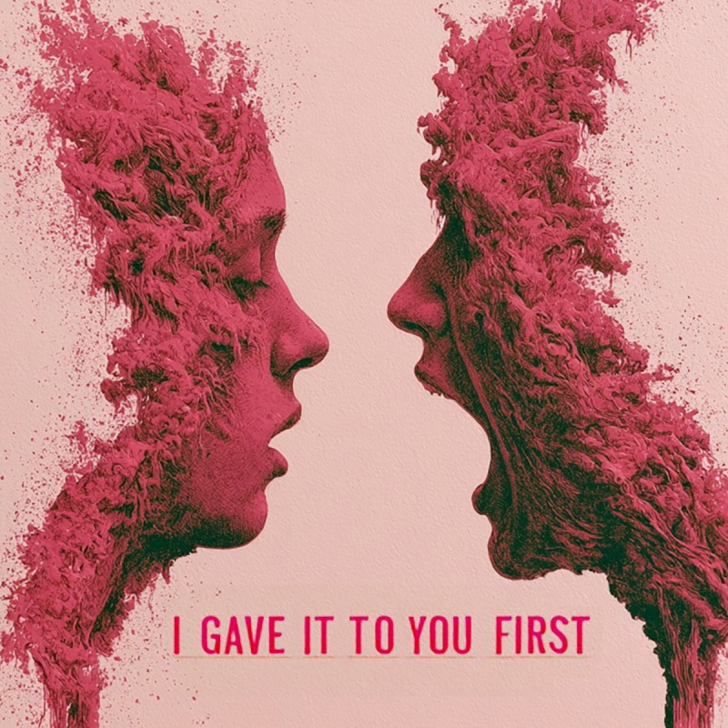

I Gave It To You First
Self-aware narcissism · ownership as generosity · the smile that never closes
Decoded Story
A story about a rare individual. A self-aware manipulative narcissist. These are his internal thoughts about himself and how he manipulates the world.
He is not confused about what he is. He knows the charm is a surface and he knows there is nothing underneath it, and neither fact troubles him. He has simply worked out that a life lived entirely on the surface is easier, and that most people will never check.
The trick in it is the giving. Everything he takes, he either claims he gave first or hands back as a gift, and then waits to be thanked for it. Dominic is never angry, never loud, never caught swinging. He keeps the same pace and the same smile, and by the time you understand what has happened it is too late. You've been walked to nothing and it's all been arranged with style.
Audio Transcript — Lyrics
Companion Pieces
In the cycle Structural Psychopathy · Hero Complex
Dominic dominicryker.com · on veX